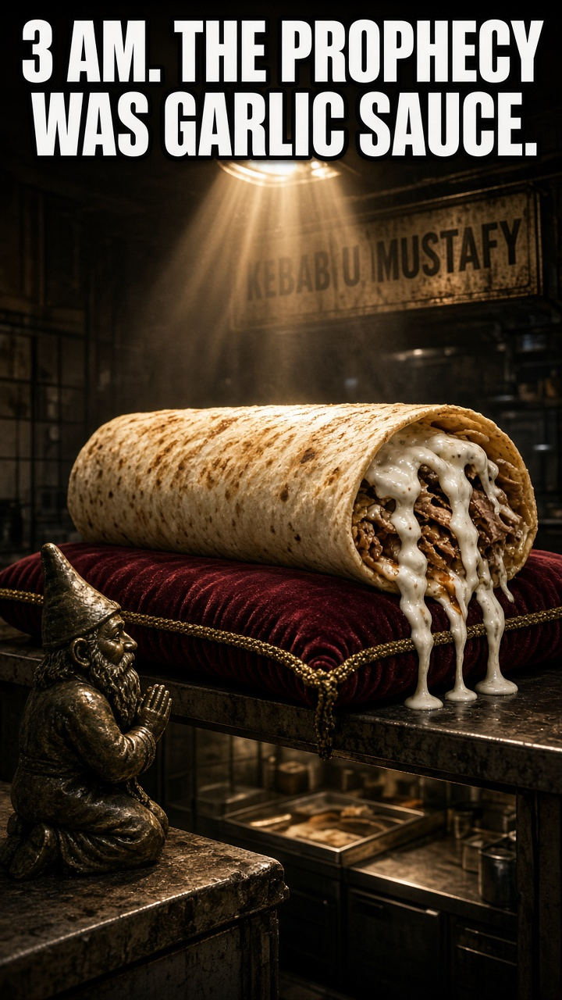
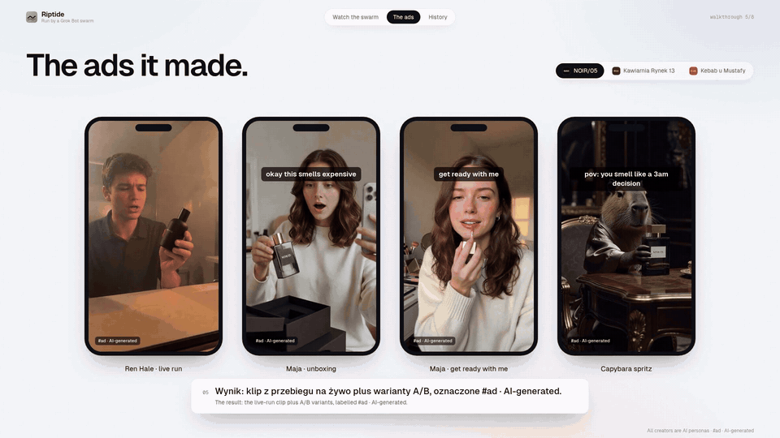

Agency cycle
~1 week
Brief → shoot → approvals

Hook
Sacred kebab.
Agent-made.

Problem
Trends live 3 days. Agencies take a week.
ROT BOT is the R&D swarm that runs Riptide — the AI ad agency that rides virals.

Technology
Four agents.
One generation.

Payoff
Trend in.
Creative out.
gen-live-002 · grok-4.7 · Critic 9 · 9 · 10 · 10
We don't follow trends.
We mutate them.
Riptide · the AI ad agency that rides virals
One-minute hackathon pitch. Real media from this repo. Auto-timed interface commentary.